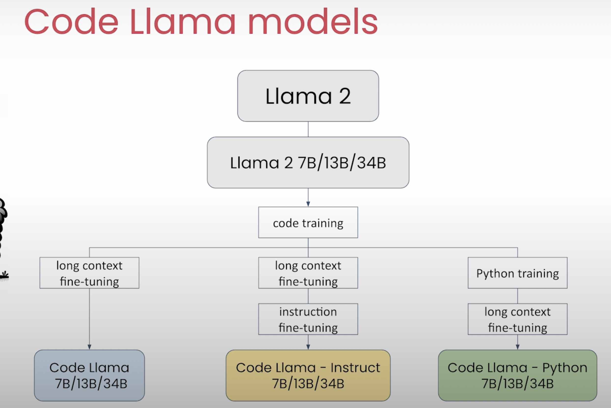
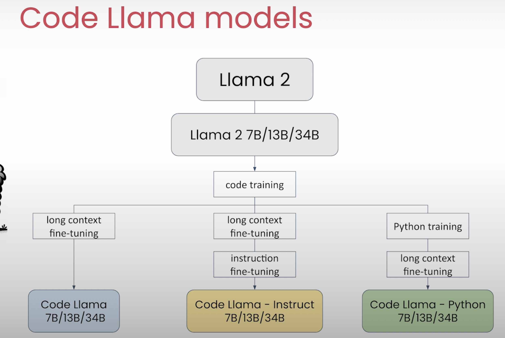
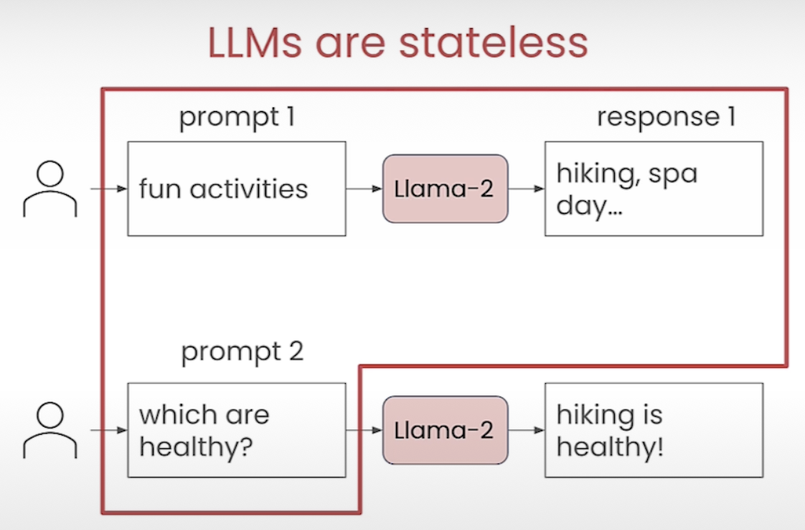
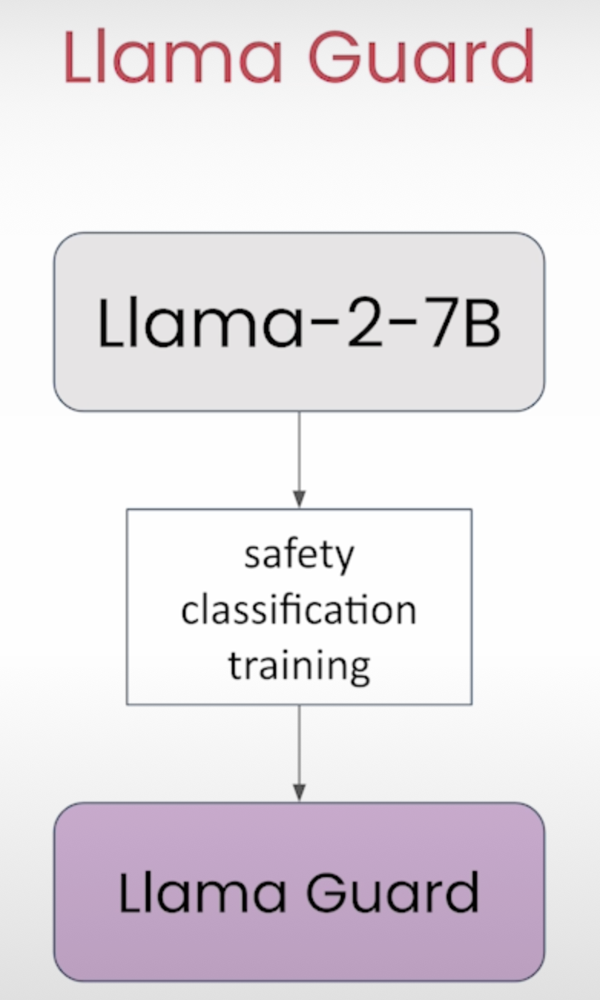

Prompting Engineering
Dayuan Tan, 05/13/2024
Prompting Engineering
- Prompting Engineering
- 1 Andrew Ng & Isa Fulford - ChatGPT Prompt Engineering for Developers
- 2 Andrew Ng & Amit Sangani - Prompt Engineering with Llama 2&3
1 Andrew Ng & Isa Fulford - ChatGPT Prompt Engineering for Developers
https://learn.deeplearning.ai/courses/chatgpt-prompt-eng/lesson/1/introduction
1.1 Principle 1: Write clear and specific instructions
- Tactic 1: Use delimiters to clearly indicate distinct parts of the input
- Delimiters can be anything like: ```, """, < >,
- Delimiters can be anything like: ```, """, < >,
- Tactic 2: Ask for a structured output
- JSON, HTML
- Tactic 3: Ask the model to check whether conditions are satisfied
- Tactic 4: "Few-shot" prompting
1.2 Principle 2: Give the model time to “think”
- Tactic 1: Specify the steps required to complete a task
- Ask for output in a specified format
- Tactic 2: Instruct the model to work out its own solution before rushing to a conclusion
Notes
1.3 Iterative prompt development
Notes
1.4 Capabilites
Summarizing
- Summarize with a word/sentence/character limit
- Summarize with a focus on xxx
- Try "extract" instead of "summarize"
- Notes 4-summarizing.html
- Notes 4-summarizing.ipynb
Inferring
- Notes 5-inferring.html
- Notes 5-inferring.ipynb
Transforming
- Notes 6-transforming.html
- Notes 6-transforming.ipynb
Expanding
- Notes 7-expanding.html
- Notes 7-expanding.ipynb
1.5 Chatbot
Notes
2 Andrew Ng & Amit Sangani - Prompt Engineering with Llama 2&3
https://learn.deeplearning.ai/courses/prompt-engineering-with-llama-2/lesson/1/introduction
2.1 Overview Llama Models
 

2.2 Basic
2.3 Multi-turn Conversations


from utils import llama
from utils import llama_chat
2.4 Prompt Engineering Techniques
In-Context Learning
Zero-shot Prompting
Few-shot Prompting
Specifying the Output Format
Role Prompting
Chain-of-thought Prompting
- "Think step by step. Explain each intermediate step. Only when you are done with all your steps, provide the answer based on your intermediate steps."
2.5 Llama guard



- 7_llama_guard.html
- 7_llama_guard.ipynb
- 8_walkthrough_helper_function.html
- 8_walkthrough_helper_function.ipynb